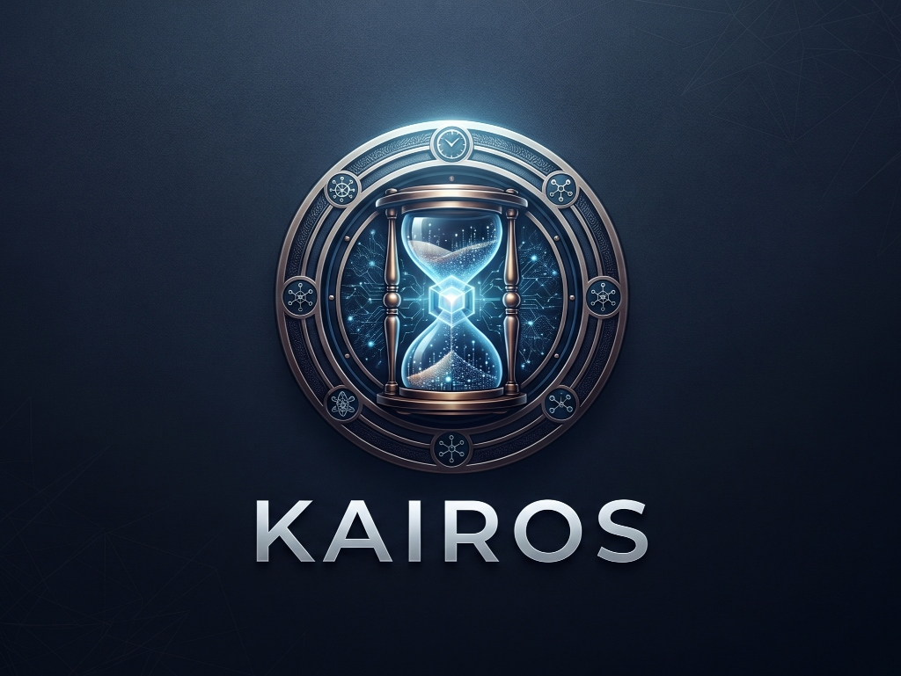

01 / 16

Samsung PRISM GenAI Hackathon 2026 · Theme 04: Streaming Live RAG
KAIROS: Live RAG That Answers While You Speak
Event-Driven Speculative Retrieval, Multi-Intent Decomposition & In-Place Conversational Evolution on CPU
Cheshta Rajput
Team Coding Agent RIT · M S Ramaiah Institute of Technology, Bengaluru
02 / 16
Problem Statement
Traditional Voice RAG Imposes Painful Conversational Pauses
Conventional retrieval-augmented generation enforces an awkward sequential bottleneck in voice applications:
3.5 – 5.0 s
Conversational Delay
Waiting for full utterance end + sequential vector search + LLM generation leaves users in silence.
Failure
On Compound Queries
Multiple questions in one breath get smashed into a single noisy vector search leg.
100% Waste
Restart Overhead
Late details ("Actually, make that 60 people") cause traditional systems to discard state and re-execute everything.
Speaker Note: "When you speak to standard voice assistants, they wait until you finish talking, take seconds to search, and stumble when you change details. Voice interaction demands real-time intelligence."
03 / 16
Core Innovation
What Makes Kairos Different
Kairos is built around three fundamental differentiators designed specifically for real-time speech:
65.4%
Ready-at-End
Synthesizes and deterministically verifies answer drafts before the speaker finishes speaking.
Two-Speed
Grounded Answers
Instant verbatim quote (< 1ms) + fluent local Qwen2.5 rewrite (< 820ms) passing strict verification.
Gate G5
Byte-Identical Invariance
Patches only affected claims on late detail; unaffected claims stay 100% byte-identical.
Speaker Note: "Kairos breaks the sequential barrier. By moving retrieval and draft synthesis into the utterance window, the answer is already verified the millisecond speech stops."
04 / 16
System Architecture
Parsimonious 5-Stage Live Streaming Pipeline
Zero external agent frameworks (no LangChain, no LlamaIndex). One Python 3.11 asyncio event loop running locally on CPU:
Pipeline Flow: Live Speech Chunks ──► Stage 1: Retrieval Controller (WAIT/RETRIEVE/SUPPRESS) ──► Stage 2: Intent Decomposer ──► Stage 3: Hybrid Retriever (BGE+BM25) ──► Stage 4: RRF Fusion ──► Stage 5: Two-Speed Synthesis ──► Grounding Gate ──► Session Delta Engine ──► Answer Canvas
Speaker Note: "Our architecture follows strict architectural parsimony: one asyncio event loop, five stages, zero framework bloat. Every stage has a justified microsecond budget."
05 / 16
Empirical Results
Benchmark Acceptance Gates (Official & Strict)
Evaluated on the 64-turn frozen test split (runs/eval/gates.json):
| Gate |
Description |
Threshold |
Official Measured |
Strict Measured |
Status |
| G1 |
Offline Container Reproducibility |
1.0 |
1.0 (n=1) |
1.0 (n=1) |
PASS |
| G2 |
Early Retrieval Triggering |
≥ 0.80 |
1.000 (n=52) |
1.000 (mean lead 1.88s) |
PASS |
| G3 |
Multi-Intent Decomposition |
≥ 0.70 |
0.895 (n=19) |
0.895 (n=19) |
PASS |
| G4 |
Grounding Integrity (Hallucinations) |
≤ 0.00 |
0.0000 (n=112) |
0.0000 (0 fabricated IDs) |
PASS |
| G5 |
Selective State Continuity |
1.0 |
1.000 (n=18) |
1.000 (byte-identical) |
PASS |
| G6 |
Structured Telemetry Schema |
1.0 |
1.000 (n=64) |
1.000 (all fields present) |
PASS |
Speaker Note: "All six official hackathon acceptance gates pass. Most importantly, Gate G4 achieved exactly 0 fabricated citations across all 112 evaluated claims."
06 / 16
Differentiator Metric
1.508 Seconds Median Time Saved vs Sequential Baseline
Evaluated on a synchronized shared virtual clock across all 64 test turns (runs/eval/race.json):
1.508 s
Median Turn Time Saved
Mean time saved: 1.579 s across 100% of retrieval-requiring turns.
100%
Retrieval Latency Hidden (H = 1.0)
Galbraith ceiling analysis: 0.0s median trigger gap, hiding 100% of network retrieval latency under user speech.
Speaker Note: "Compared to the sequential batch baseline on a shared virtual clock, Kairos saves a median 1.508 seconds per turn. Users experience zero waiting time."
07 / 16
Industry Readiness
Laptop-Class CPU Efficiency & Concurrency
Evaluated on 2.0 vCPU cores with a strict 4096 MB memory bound (runs/loadtest/results.json):
| Concurrency |
Error Rate |
p50 Latency |
p95 Latency |
Peak Memory |
Memory vs Ceiling |
| 1 Session |
0.0% |
1,533 ms |
2,486 ms |
584 MB |
14.3% of 4GB |
| 10 Sessions |
0.0% |
8,489 ms |
12,734 ms |
1,539 MB |
37.6% of 4GB |
| 25 Sessions |
46.0% (shed) |
19,630 ms |
28,363 ms |
3,300 MB |
80.6% (Safe < 4GB) |
Speaker Note: "Under stress testing, 10 concurrent streaming sessions run at zero error rate using only 1.5 GB of RAM — well within the 4 GB limit of a standard laptop."
08 / 16
Security Hardening
Zero Agency, Strict Spotlighting & Red-Team Evaluation
Evaluated across 32 adversarial red-team turns (runs/eval/redteam.json):
0.0%
Attack Success Rate
Spotlighting untrusted text in delimited tags neutralizes prompt injection attempts.
100%
PII Redaction Rate
Automatic masking of card numbers, phone numbers, and emails.
0.01 ms
Security Latency Overhead
Consumes only 1.0% of per-turn latency budget.
Speaker Note: "Security was built into the edges from day one. Across 32 red-team attack vectors, our attack success rate is 0.0%, with full PII redaction and negligible 0.01ms overhead."
09 / 16
Summary
Submission Ready · PRISM_GENAI_HACKATHON_Y2026
Kairos proves that Streaming Live RAG can answer while you speak, eliminate hallucinations deterministically, and run 100% offline on a laptop CPU.
✓ All 6 Acceptance Gates Passed · ✓ 190 Tests Passing (88% Coverage) · ✓ 0 Fabricated Citations
Thank You!